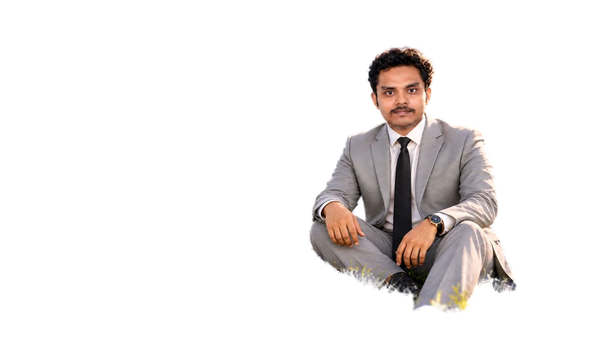
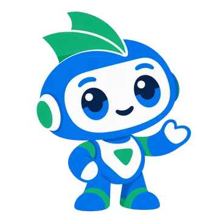

Md RakibSaleh Founder & CEO Teachers didn’t sign up to run spreadsheets. We built Exam Binary so the institute runs itself and the classroom gets its teacher back.
 ShadabSajidChowdhury Founder & CEO A good question paper used to cost a teacher a weekend. Now the AI drafts it before the tea gets cold, and that weekend goes back to just teaching.
01 · Schools & coaching centres Exam Binary. Attendance, homework, exams and results in one place, with AI that writes the lesson plans and papers. See it in action Exam Binary · TeacherMonday Today 09:00Class 10 · Physics28/30 in 10:30Class 8 · MathsHW due 12:00Class 9 · ChemistryTest Results · Class 10
02 · Students Dokkho AI. A gamified AI-learning system. Students level up through arenas, one quick duel at a time. See it in action  Dokkho AI · Arena 312-day streak Farhana · Level 7Silver league · 1,240 trophies680 / 1,000 XP Arena 3 · Trust & truth ✓✓4★ PromptsSourcesFact checkBiasBoss duel Which one is an AI hallucination?3 / 5 A confident date that never happenedA source you checked yourself